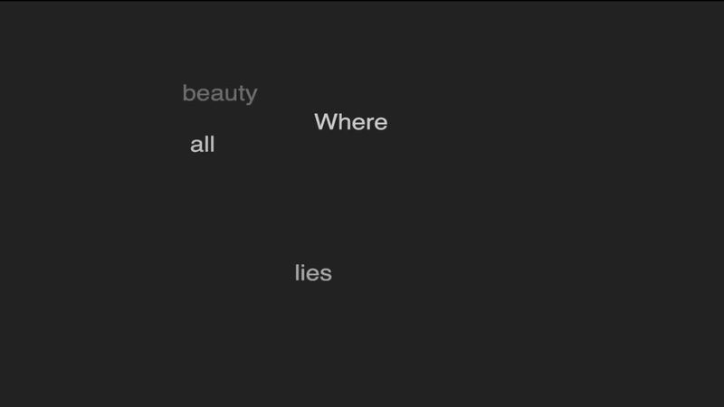

two weeks from today, I'll be leading a workshop on what I'm calling "code sonnets" on zoom, as one part of A Writer's Party, which is a wonderful free alternative to the AWP conference both in-person here in Philadelphia and online. The image above is a screenshot from one of the examples I've cooked up for the workshop, but we're going to make all sorts of things with just 14 lines of code at a time. You can find a link to register on the home page of my website. I hope you'll join us.
williamthazard [at] pm.me